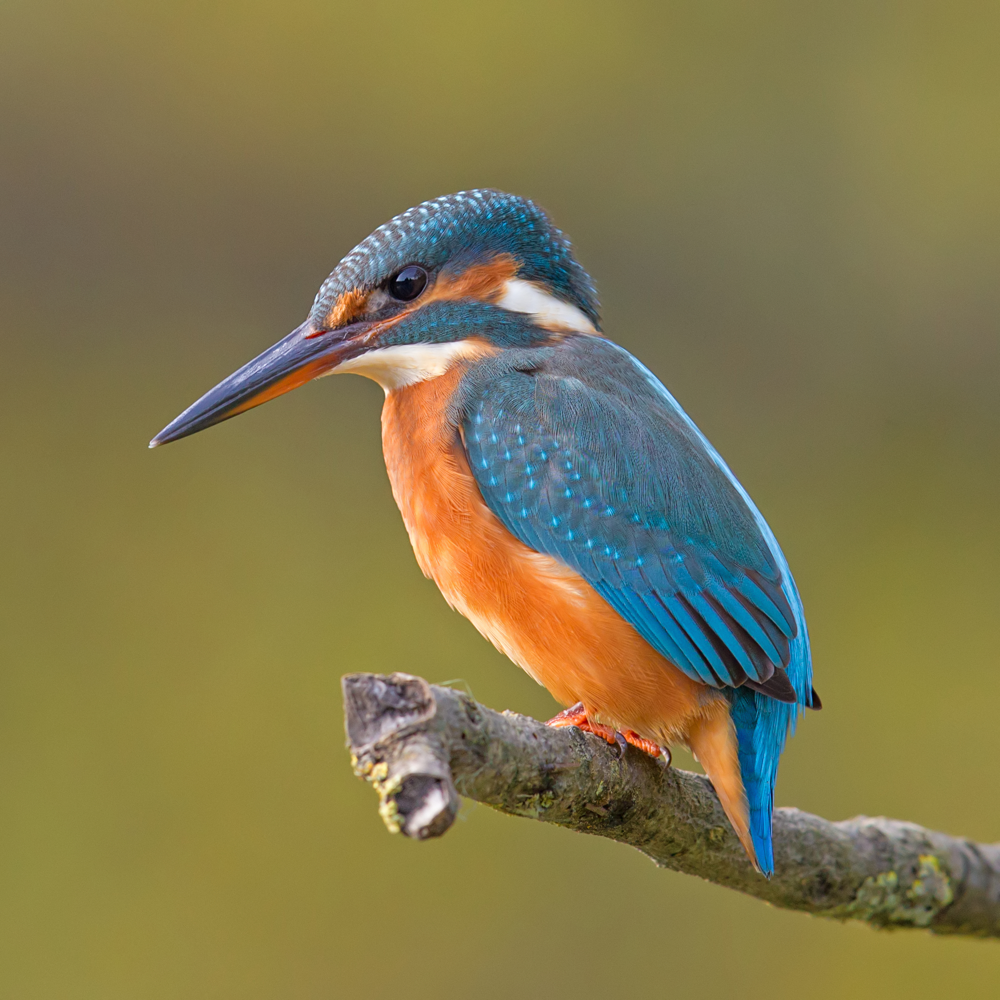
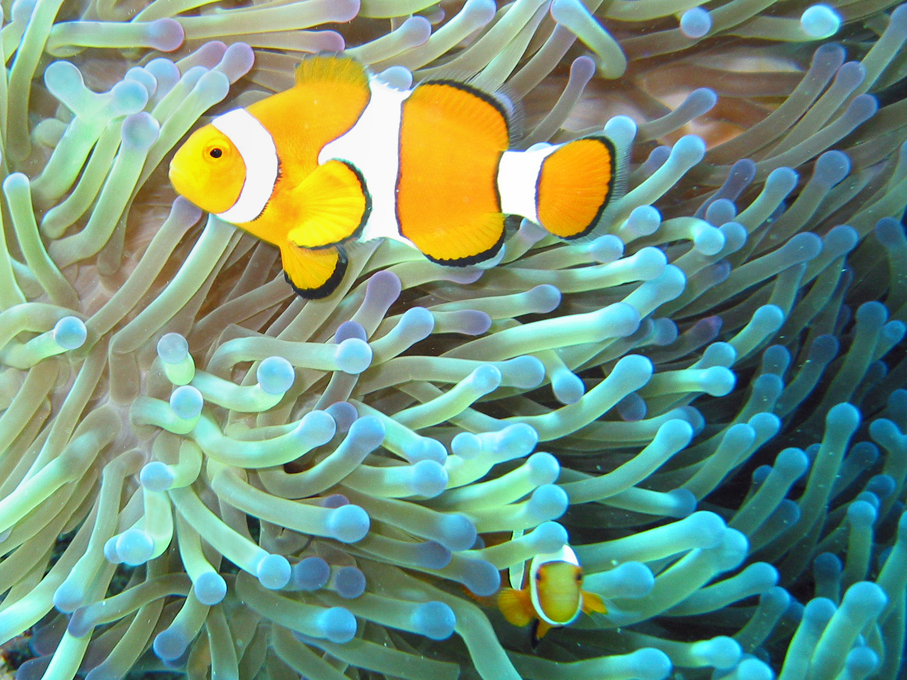
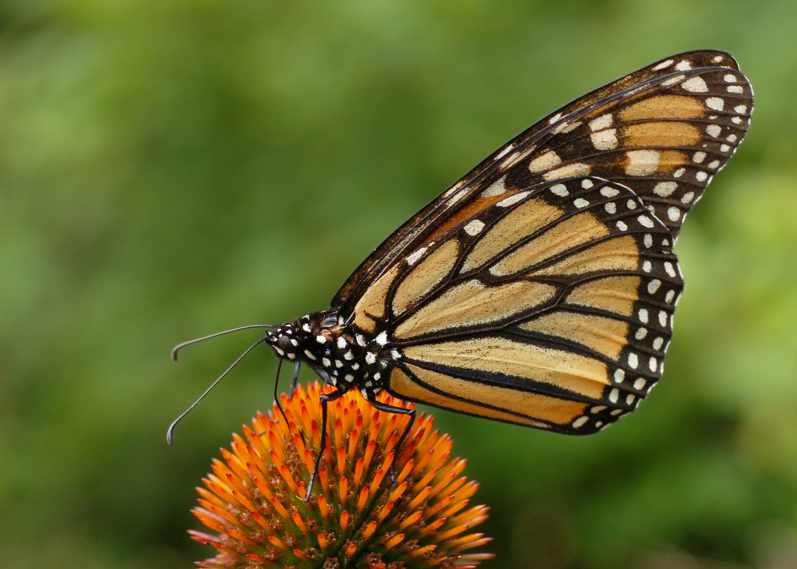

花卉识别
3000+常见物种知识
4 类花鸟鱼虫重点覆盖
秒级拍照识别反馈
随身自然观察打卡
Real Nature Gallery
真实花鸟鱼虫，一眼进入自然现场
用实拍图片呈现核心识别场景，让用户在打开页面的第一刻就知道它能帮自己认识什么。

鸟类识别
遇见飞羽，认识栖息地与习性

鱼类识别
水族饲养与生态知识随手查

昆虫识别
从翅纹、触角到活动季节，补全观察记录
Why NatureLet
不是只告诉你名字，也帮你真正看懂
拍照识别
上传清晰照片后，展示候选物种、相似度、拉丁名和关键识别点。
养护与饲养
补充光照、浇水、温度、食性、饲养注意事项，让兴趣自然延伸。
风险提醒
对有毒、危险、入侵或不建议触碰的物种做醒目提示，降低误判风险。
打卡记录
记录地点、时间、照片和笔记，积累自己的自然观察地图。
Use Cases
从生活场景进入自然学习
高级感不只来自视觉，也来自用户一眼能理解的使用场景。
公园散步
遇见不认识的花草鸟鸣，随手拍下并收藏观察记录。
亲子自然教育
把一次户外游玩变成可互动、可回顾的自然课堂。
阳台养花
识别植物后查看光照、浇水、修剪和病虫害提醒。
水族饲养
认识观赏鱼与饲养要点，减少新手踩坑。
专业提示
AI 识别适合辅助学习和观察记录；遇到有毒、危险或保护物种，请以专业资料和当地规定为准。
People In Nature
真实人物场景，更像一次随身自然导览
从公园散步、亲子郊游到阳台养花，用户打开相机就能把“好奇一下”变成一次完整记录。
- 识别眼前物种
- 生成知识卡片
- 收藏并打卡
人在自然环境中使用手机，契合拍照识别与观察记录的产品场景。
Daily Learning
今日科普
每天认识一种植物或动物，图文知识随手学。
Mini Program
打开自然识别宝，把每次遇见都收进观察册
上线后替换为正式小程序码，即可引导用户从宣传页直接进入拍照识别、收藏和打卡流程。
微信扫码
打开小程序
打开小程序
About
让身边自然变得可亲近
「自然识别宝」致力于让每个人都能轻松认识身边的植物与动物。识别与养护知识仅供参考，无法替代专业鉴定；危险、毒性、外来入侵等提示请以专业资料核实。